Práctica Docker 1 · Nginx e imagen Node.js
Contenido completo del documento original del ejercicio.
Práctica Docker 1. Nginx e imagen Node.js Objetivos
· Diferenciar imagen y contenedor.
Una imagen es una plantilla donde se encuentran las instrucciones para montar el contenedor. El contenedor, es una instancia ejecutable aislada de la imagen.
· Descargar y ejecutar imágenes. Consultar estado, logs e inspección.
.Publicar puertos y montar carpetas.
· Modificar la página que sirve Nginx.
· Crear una imagen propia con un Dockerfile.
1. Comprobaciones y descarga
docker --version : Muestra la versión instalada de docker
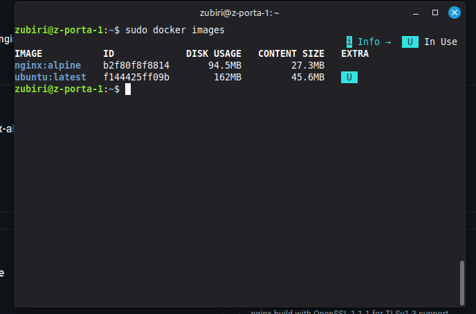
docker compose version: Muestra la versión de docker compose instalada
docker images: Muestra las plantillas instaladas de docker
docker pull nginx:alpine : Descarga la plantilla desde dockerhub
docker images
Responde: ¿qué muestra docker images? ¿Qué diferencia hay entre imagen y contenedor?
Docker images muestra todas las plantillas descargadas.Una imagen es una plantilla donde se encuentran las instrucciones para montar el contenedor. El contenedor, es una instancia ejecutable aislada de la imagen.
2. Ejecutar Nginx
docker run -d --name mi-nginx -p 8080:80 nginx:alpine
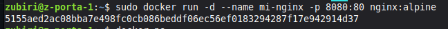
Abre http://localhost:8080. Después ejecuta:
docker ps
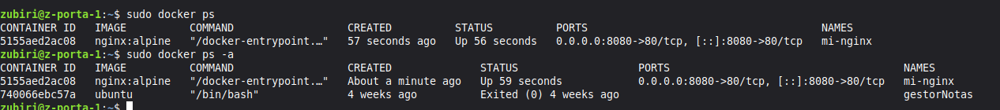
docker ps -a
docker logs mi-nginx
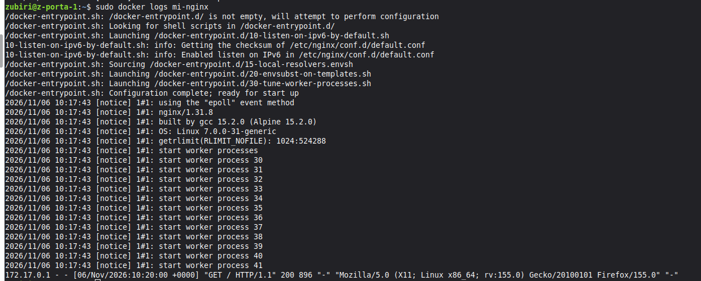
docker inspect mi-nginx
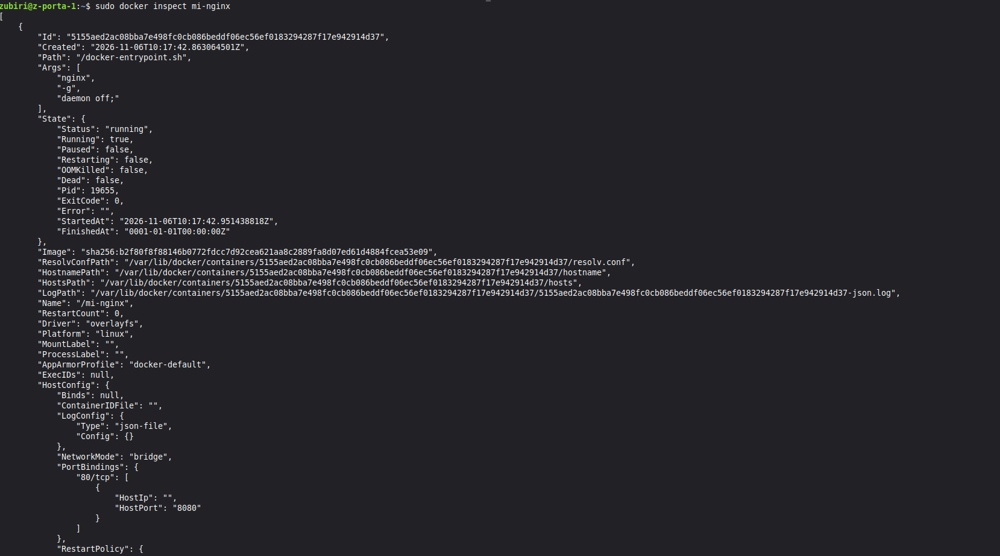
Responde: ¿qué hacen -d y -p 8080:80? ¿Qué diferencia hay entre docker ps y docker ps -a?
-d hace que se ejecute en segundo plano, -p redirecciona los puertos de nuestra máquina a los puertos de la virtual. La diferencia entre docker ps y ps -a es que el primero muestra los contenedores activos y el segundo muestra todos.
3. Modificar la página desde dentro del contenedor
docker exec -it mi-nginx sh
ls -l /usr/share/nginx/html
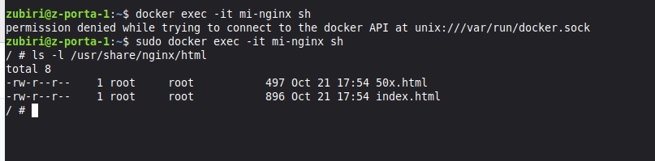
Dentro del contenedor, sustituye la página de inicio:
Actualiza http://localhost:8080.
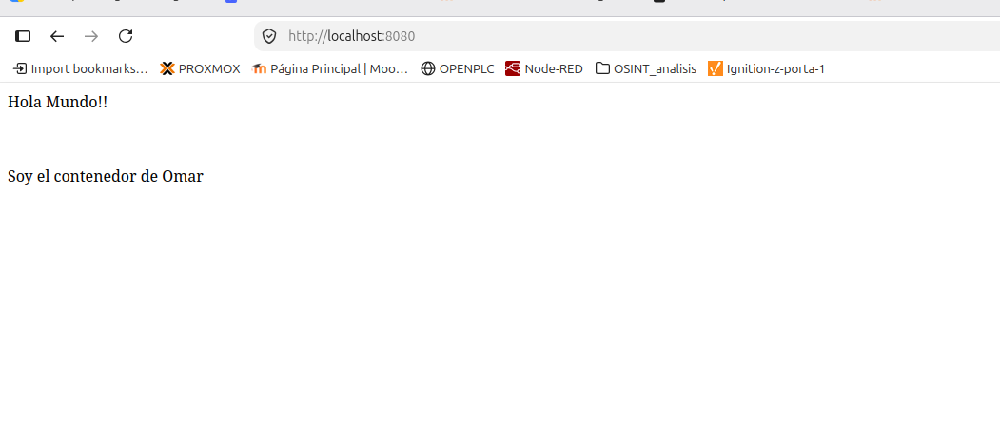
Responde: ¿en qué ruta estaba el archivo? ¿El cambio está dentro del contenedor o en tu equipo? ¿Qué pasará si eliminas el contenedor y creas otro desde la imagen original?
El archivo estaba en /usr/share/nginx/html dentro del contenedor. Si eliminara dicho contenedor y creo otro desde la imagen original, mis cambios no estarian.
4. Servir una página propia desde el equipo
Crea una página web de inicio en el editor y cambia el título, el texto y el color de fondo. Guarda. Elimina el contenedor anterior:
docker rm -f mi-nginx
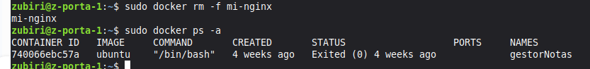
Desde la carpeta 01-nginx-y-node que tienes en el curso de Moodle, monta la carpeta local en Nginx:
docker run -d --name mi-nginx -p 8080:80 -v "$(pwd)/mi-web:/usr/share/nginx/html:ro" nginx:alpine
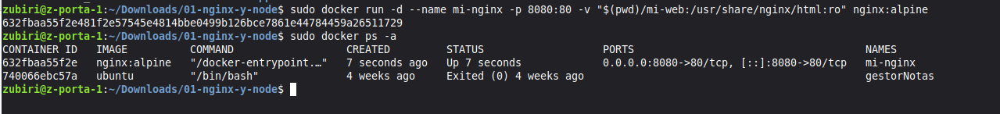
Responde: ¿qué hace -v? ¿Qué significa: ro? ¿En qué se diferencia este montaje de modificar el archivo dentro del contenedor?
-v sirve para montar almacenamientos en el contenedor, mientras que ro es para que solo sea read only, es decir, no editable.
5. Construir una imagen Node.js
Entra en la carpeta node-app y revisa app.js y Dockerfile:
cd node-app
docker build -t mi-servidor-node:v1 .
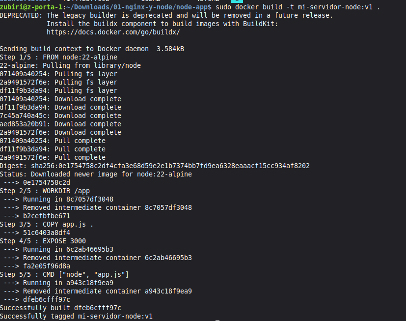
docker images
docker run -d --name servidor-node -p 3000:3000 mi-servidor-node:v1
Abre http://localhost:3000. Consulta:
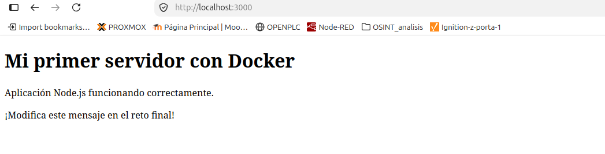
docker history mi-servidor-node:v1
docker logs servidor-node
Responde: ¿qué hacen FROM, WORKDIR, COPY, EXPOSE y CMD?
| Instrucción | Función |
| FROM | Define la imagen base sobre la que construyes tu imagen. |
| WORKDIR | Establece el directorio de trabajo dentro de la imagen para las instrucciones posteriores y para el proceso al arrancar. Lo crea si no existe. |
| COPY | Copia archivos del contexto de construcción a la imagen. |
| EXPOSE | Declara el puerto que se espera que utilice la aplicación. |
| CMD | Define el comando predeterminado que se ejecutará al iniciar un contenedor con esa imagen, no durante su construcción. |
¿EXPOSE publica el puerto por sí solo? No. EXPOSE 3000 solo declara el puerto: no lo publica en tu ordenador ni hace que la aplicación empiece a escuchar en él
¿Qué diferencia hay entre docker build y docker run? docker build construye una imagen a partir de un dockerfile. Docker run crea un contenedor a partir de una imagen
Reto final
Modifica app.js para incluir el nombre de tu equipo. Construye la versión 2 y sustituye el contenedor:
docker build -t mi-servidor-node:v2 .
docker rm -f servidor-node
docker run -d --name servidor-node -p 3000:3000 mi-servidor-node:v2
Comprueba http://localhost:3000.
Limpieza y entrega
docker rm -f mi-nginx servidor-node
Entrega capturas de Nginx original y modificado, tu mi-web/index.html, la app Node funcionando, el Dockerfile y las respuestas.